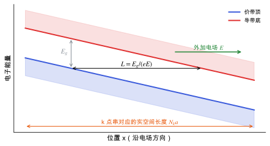

有限电场方法
在周期性晶体里直接加一个均匀电场，用极化随电场的变化求介电张量、玻恩电荷和压电张量；它是线性响应不支持某些泛函（例如杂化泛函）时的替代方法。
直观阅读需要
只是提示，不需要先读完才能往下看。
直觉直观解释
想算介电或玻恩电荷，最直接的做法是“加一个电场，看极化怎么变”。在分子里这很简单：哈密顿量加一项 e\,\mathcal E\cdot \mathbf r。在周期性晶体里不行，因为位置算符 \mathbf r 不是周期的，\mathcal E\cdot\mathbf r 随距离无限增大，没有基态。
解决办法是不再在哈密顿量里写 \mathbf r，而是把电场与 Berry 相极化 \mathbf P 耦合：求极小的不是能量，而是电焓 (electric enthalpy) E - \Omega\,\mathcal E\cdot\mathbf P [Souza, Íñiguez & Vanderbilt 2002] [Nunes & Gonze 2001]。\mathbf P 本身就是用 Berry 相定义的周期量（见 极化与 Berry 相），所以这个泛函在周期体系里有定义。
代价是：电场下的晶体严格说没有基态。电子可以从价带隧穿到下游很远处的导带（Zener 击穿）。有限 k 点网格把这段距离截断在 N_k a 以内，只要电场足够小，隧穿被压住，求得的就是一个物理上有意义的长寿命态。

| 符号 | 是什么 | 图里对应 |
|---|---|---|
| \mathcal E | 外加的均匀电场（正文用 \mathcal E，图中写 E） | 绿色箭头 |
| E_g | 带隙 | 灰色竖向箭头 |
| L | 能量相同的价带态与导带态之间的距离 | 黑色双向箭头 |
| N_k a | 电场方向上 k 点串的点数乘以晶格常数 | 橙色双向箭头 |
定义与公式数学与推导
用几个小电场做完自洽后，响应量由差商给出：
其中 \epsilon_0 是真空介电常数；|_{\mathbf u} 表示原子坐标固定（夹持离子）；F_m 是原子坐标 m 上的力；e 是元电荷；\sigma_j 是 Voigt 应力分量。第二、三式利用了能量混合二阶导数的对称性：\Omega 乘以极化对位移的导数，等于力对电场的导数，两者除以 e 都是 Z^{*}；极化对应变的导数等于应力对电场的导数（符号依应力约定而定）。
和微扰方法的关系对应与边界
- 求的是同一组量：在线性区，有限电场与 DFPT 给出相同的 \varepsilon^{\infty}、Z^{*} 和 \bar e（同一泛函、同一设置下）。区别和 有限差分与微扰方法 讲的一样：一个有电场步长，一个没有。
- 它能做而 DFPT 做不了的：只要程序能算能量和 Berry 相极化，就能做有限电场，不需要为每种泛函写响应方程。所以杂化泛函、某些 meta-GGA 下的介电与压电，通常走这条路。
- 还能做非线性：大一些的电场下可以算二阶响应，或者在电场下做分子动力学 [Umari & Pasquarello 2002]。
在本研究线里的样子对应与边界
- VASP：
LCALCEPS = .TRUE.用有限电场计算介电张量、玻恩电荷和夹持离子压电张量；EFIELD_PEAD指定一个固定电场。两者都基于 PEAD（perturbation expression after discretization）方法，属于LCALCPOL那一组功能 [VASP Wiki: LCALCPOL]。 - 用途：检查 PBE 低估带隙对 Z^{*} 和 \bar e 的影响。做法是在同一个 PBE-D3 结构上，用杂化泛函加
LCALCEPS重新算电子部分，再和 PBE 的 DFPT 结果比较。这一步只改电子响应，离子项（力常数、内应变）仍用 PBE-D3。 - 代价：杂化泛函的计算量远高于 PBE，分子晶体晶胞又大，只适合对少数最终候选做。
常见坑对应与边界
- 电场太大：超过临界场后自洽不收敛，或者收敛到一个电荷已经转移的态。
- k 点太密反而出问题：在固定电场下加密 k 点会降低临界场；做 k 点收敛时要同时减小电场。
- 只换了泛函的一半：用杂化泛函算电子响应、用 PBE-D3 算离子项时，要在说明里写清，不要把结果称为“杂化泛函压电系数”。
检验自己对应与边界
参考资料
论文Souza, Íñiguez & Vanderbilt 2002
尚未实际查阅，目前只是拟查阅书目
论文Nunes & Gonze 2001
尚未实际查阅，目前只是拟查阅书目
论文Umari & Pasquarello 2002
尚未实际查阅，目前只是拟查阅书目
官方文档VASP Wiki: LCALCPOL
VASP Wiki, LCALCPOL（Berry 相方法计算宏观极化）
尚未实际查阅，目前只是拟查阅书目
教材Vanderbilt 2018
D. Vanderbilt, Berry Phases in Electronic Structure Theory, Cambridge University Press (2018)
尚未实际查阅，目前只是拟查阅书目
论文Baroni 2001
尚未实际查阅，目前只是拟查阅书目
分类响应与张量性质 · 方法 · 研究线：压电与响应计算 · 状态：草稿